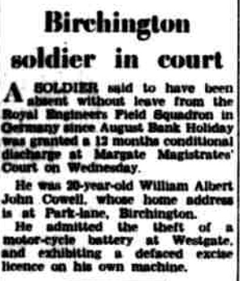
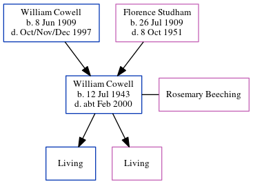

William Albert John Cowell 1943 - c2000
[ Home ] | [ Calendar ] | [ Surnames Index ] | [ Errors ] | [ Family History ]The 2nd of 3 children of William Cowell (a coal agricultural merchants lorry driver) and Florence Studham, William Cowell, the second cousin on the mother's side of Nigel Horne, was born in Thanet, Kent, England on 12 Jul 19431,2,3 and. He married Rosemary Beeching (with whom he had 2 surviving children Paul John and Debra Alison) in Thanet around Nov 19654.
During his life, he was living on Park Lane, Birchington, Kent, England in 1963; and at 19 Canterbury Road, Westgate, Kent in 19745. That is also where he died c. Feb 2000 in Thanet1,3 (melanoma).
Parents
- William John was born on 8 Jun 1909
- Florence May was born on 26 Jul 1909
Citations
- England & Wales deaths 1837-2007 - Findmypast
- England & Wales, Birth Index: 1916-2005 Online publication - Provo, UT, USA: The Generations Network, Inc., 2008.Original data - General Register Office. England and Wales Civil Registration Indexes. London, England: General Register Office. © Crown copyright. Published by permission of the Cont
- England & Wales, Death Index: 1984-2005 Online publication - Provo, UT, USA: The Generations Network, Inc., 2007.Original data - General Register Office. England and Wales Civil Registration Indexes. London, England: General Register Office. © Crown copyright. Published by permission of the Cont
- England & Wales, Marriage Index: 1916-2005 Online publication - Provo, UT, USA: The Generations Network, Inc., 2009.Original data - General Register Office. England and Wales Civil Registration Indexes. London, England: General Register Office. © Crown copyright. Published by permission of the Cont
- 1974 Kelly's Thanet Directory
Media
East Kent Times and Mail - 4 Sep 1963

1974 Kelly's Thanet Directory

England & Wales deaths 1837-2007 - BMD/D/2000/2/83602400
England & Wales births 1837-2006 - BMD/B/1943/3/AZ/000258/049
Family Tree
Map
Generated by ged2site. Last updated on Jul 3, 2024
Known Issues
Residence record for 1963 contains no citation
Listed in the residence for 1974, but spouse Rosemary Beeching is not